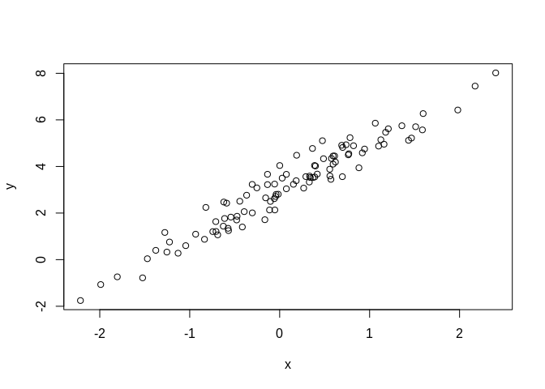

R: Simulation
Distributions
Probability distributions are already built in:
- norm for Normal
- binom for Binomial
- pois for Poisson
- etc.
Each distribution has four functions with the following prefix:
- r for random, random numbers from distribution
- d for density, density function (PDF)
- p for probability, cumulative distribution function (CDF)
- q for quantile, inverse CDF
# Normal rnorm(10) # 1.51178117 0.38984324 -0.62124058 -2.21469989 ... pnorm(0.5) # 0.6914625 <- 69% prob that value is <=0.5 qnorm(0.6914625) # 0.5 <- Inverse of above # Binomial rbinom(10, 5, 0.5) # 5 3 2 2 1 0 3 1 2 3 <- 10 obs, 5 trials each, 50% prob per trial dbinom(3, 5, 0.5) # 0.3125 <- 31.25% prob of getting exactly 3 success in 5 trials at 50% prob
Seed
set.seed(1) rnorm(5) # [1] -0.6264538 0.1836433 -0.8356286 1.5952808 0.3295078 rnorm(5) # [1] -0.8204684 0.4874291 0.7383247 0.5757814 -0.3053884 set.seed(1) rnorm(5) # [1] -0.6264538 0.1836433 -0.8356286 1.5952808 0.3295078 <- Same as first
Sampling
set.seed(1) # Random sample x <- 1:9 sample(x, 3) # 3 9 5 sample(x, 3) # 9 2 7 <- New sample with each call sample(letters, 5) # y" "q" "p" "b" "e" # Random sample with replacement sample(x, 5, replace = TRUE) # 2 7 4 7 5 # Permutations sample(x) # 7 8 3 5 6 1 2 4 9 sample(x) # 4 1 3 6 2 5 9 8 7 <- New permutation with each call
Linear Model
set.seed(1) x <- rnorm(100) e <- rnorm(100, 0, 0.5) # Add noise with mean 0, sd 0.5 y <- 3 + 2 * x + e plot(x, y)
